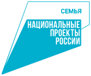

Национальный проект
Семья
Исследовательская основа, показатели, методы и источники экспертизы национального проекта «Семья».

Открыть интерактивную платформу
Материалы проекта
Статистический срез: 2026-10-15. Документальная редакция: 2026-05-14.
Дата публикации сайта не заменяет дату первичных данных. Авторская экспертиза «Семьи» сохраняет собственную документальную редакцию; актуальные статистические ряды доступны в интерактивных разделах.
Структура экспертизы
- Методологическая рамка экспертизы
Реестр методов и их ограничений подготовлен; содержательные выводы требуют отдельной авторской экспертизы.
- Нормативно-логическая модель
В исследовательском корпусе: 0 целей, 0 задач, 0 результатов. Документальная связь не является доказательством причинного эффекта.
- Аудит данных и показателей
В реестре 23 показателей; числовые данные доступны для 19, региональные для 13.
- Целевые траектории и прогноз
Паспортные цели и статистические ряды сопоставляются только при подтверждённом совпадении показателя, единицы измерения, территории и периода.
- Территориальная экспертиза
Региональные данные имеются для 13 показателей. Карты требуют отдельной проверки сопоставимости выбранного периода.
- Типология и пространственные связи
Статус многомерной панели: computed; территорий: 84, признаков: 9. Региональная типология не тождественна оценке эффективности.
- Финансовая экспертиза
Финансовые суммы и доли сохраняют единицы исходного паспорта. Оценка распределения средств зависит от сопоставимости заголовков федеральных проектов.
- Мероприятия и показатели
В корпусе разделены документальные связи, совместная принадлежность задаче и лексические кандидаты. Автоматическая похожесть не превращается в доказанную связь.
- Лингвистическая и смысловая экспертиза
Документальная основа исследовательского модуля: 4 документов. Лексические признаки рассматриваются совместно с контекстом.
- Охват сфер жизнедеятельности
Сферы жизнедеятельности выделяются по корпусу и словарям; полнота охвата требует содержательной проверки экспертом.
- Сценарии и причинная оценка
Причинный эффект нацпроекта в имеющемся наборе источников не идентифицирован. Для его оценки нужен самостоятельный исследовательский дизайн.
- Предложения по корректировке
Рекомендации формируются после проверки фактов и содержательной экспертизы, с указанием адресата, механизма и ожидаемого результата.